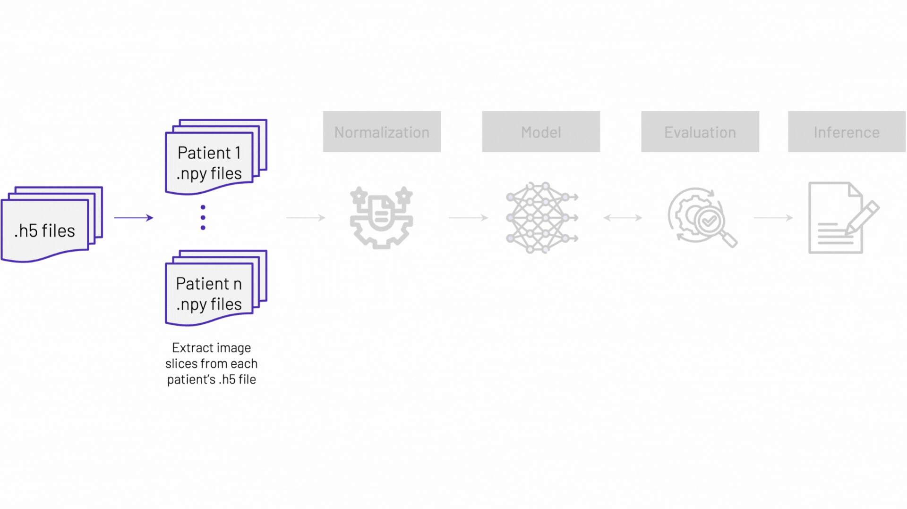
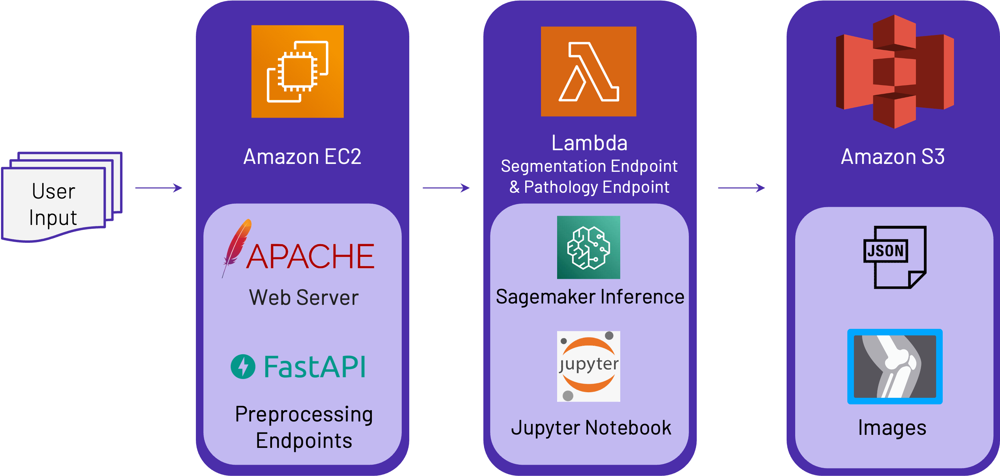

Technical Highlights
Dataset
SKM-TEA: Stanford Knee MRI Multi-Task Evaluation Dataset
- A collection of quantitative knee MRI scans acquired clinically at Stanford Healthcare
- 155 patients received a knee MRI with the qDESS sequence on one of two 3 Tesla (3T) GE MR750 scanners
- Each patient's scan contains 160 knee images, which allows radiologists to view the patient's knee, a 3d object, as a series of 2d images
- Training: 86 scans; Validation: 33 scans; Test: 36 scans
- 4 Tissue labels for segmentation: patellar cartilage, femoral cartilage, meniscus, tibial cartilage
- 2 Pathology labels derived from annotations: abnormal (cartilage lesion, ligament tear, meniscal tear, effusion) and normal (no abnormality)

Model Pipeline

Segmentation Model: U-Net

U-Net is the most widespread image segmentation architecture due to its flexibility, optimized modular design, and success in all medical image modalities.
It is able to handle high-resolution images and produce accurate pixel-level segmentation maps. Its architecture is compact, suitable for real-time or near real-time applications in healthcare.
Segmentation Model Performance
The pixel-level accuracy for each of the four tissues is around 90% (Table 1). The model is generally able to predict tissue labels accurately when the tissues are present and when there is no tissue (Fig. 1). There are cases where the model struggles to predict correctly when there is tissue present (Fig. 2a), and there are instances of over-prediction (Fig. 2b). Further improvement is needed to address these issues.
| Label | Pixel-Level Accuracy |
|---|---|
| patellar cartilage | 93.6% |
| femoral cartilage | 90.7% |
| medial/lateral meniscus | 89.3% |
| medial/lateral tibial cartilage | 86.8% |
Pathology Detection Model: EfficientNet
EfficientNet uses compound scaling to improve performance with increased computational efficiency.
It is capable of a wide range of image classification tasks, achieving state-of-the-art accuracy for benchmark dataset, with an order-of-magnitude fewer parameters, and hence great for transfer learning.
Pathology Detection Model Performance
The pathology detection model's performance is measured using balanced accuracy, to take into consideration of the dataset's class imbalance issue. It achieved an 87% balanced accuracy and an F2 score of 87%, indicating a good overall performance. Our focus is on minimizing false negatives to avoid missed diagnose and hence the use of F2 score.
The model generally performs well in predicting abnormalities when there are lesions or tears on the scan, as well as correctly identifying normal scans with no lesions (Fig. 3). However, it makes incorrect predictions in very rare cases, such as failing to detect a lesion (Fig. 4a) and misidentifying a normal scan as abnormal (Fig. 4b). To improve accuracy, the plan is to fine-tune the model and include additional features like contour and texture.
| Metric | Value |
|---|---|
| Balanced Accuracy | 87.43% |
| F2 Score | 87.27% |
End-to-End AWS Architecture

Our MVP is entirely deployed on AWS Infrastructure.
Patient's scan in HDF5 format can be uploaded by user from User Interface (UI). The UI is deployed on an AWS EC2 instance, and the Apache Web Server is used to serve the UI files and handle HTTP requests. All services interact using fast API endpoints. Once the patent's scan is uploaded, a unique identifier is generated for the file. The unique identifier serves two purposes:
- Using the unique identifier, user can retrieve tissue segmentation and pathology summary without re-executing the model within 30 days
- The unique identifier allows different users to upload files with the same name and generate predictions without overriding existing data
Amazon Sagemaker Notebook instance is used for model training. Sagemaker is also used for deploying models as endpoints for inference. To make the architecture scalable, Lambda is used, because of its ability to handle millions of request, to create URL endpoints to trigger the model endpoints.
Amazon S3 is used for persisting uploaded patient's scans, various JSON files created at different stages of processing and model inference.